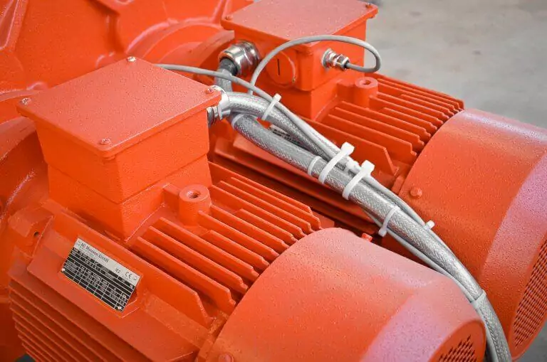

01
High drive power with double motor, planetary gear drive and frequency converter
Two powerful electric motors with up to 30 kW drive power each drive the four shafts. In the machines of this series, WEIMA relies on robust planetary gears to generate high torques. Optionally, the ZM series can be equipped with a frequency converter. This allows the speed to be continuously regulated and power spikes can be avoided.
